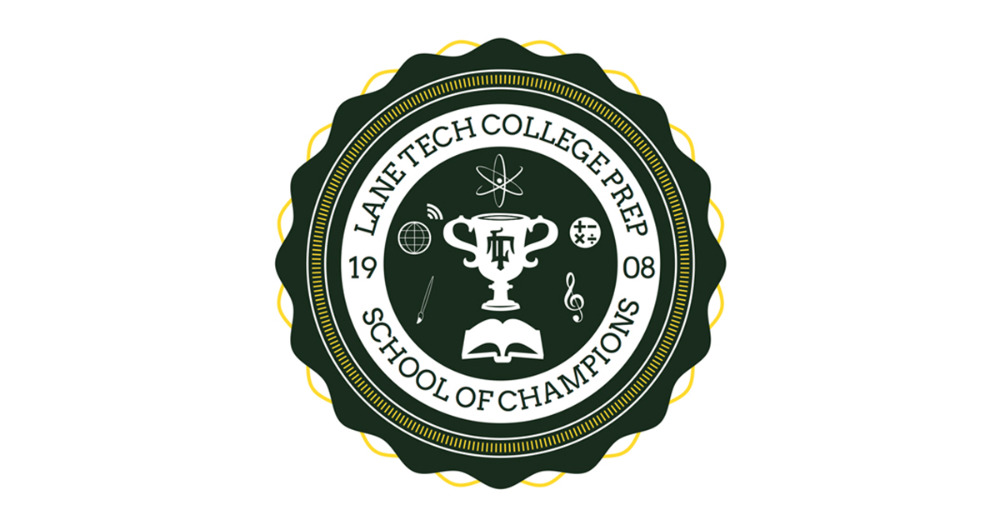
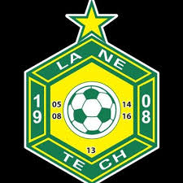

Elementary School
My next achievement was finishing elementary school very good grades. Up until 7th grade I had straight A's every year up until 7th grade when I got one B. I was a good student and with my grades I was able to get into Lane Tech.

This was the first of many achievements to come in my life and certainly one of my biggest. It was a really hard challenge for me to overcome with me not having any background in English since I was only six years old when I came to the United States. Then I got put into elementary school not knowing any English. After about two years I was able to speak fluent English after not knowing any which was a big achievement for me in my life.
My next achievement was finishing elementary school very good grades. Up until 7th grade I had straight A's every year up until 7th grade when I got one B. I was a good student and with my grades I was able to get into Lane Tech.
One of my biggest achievements in my life so far has been getting into Lane Tech. It is one of the best high schools in Chicago and getting into it was a big moment in my life since I would be going here for the next four years of my life. It was the high school that I really wanted to get into which I did.
Soccer has been one of my biggest passions and I have had many achievements in it. But the greatest one was being on the Lane team. I worked really hard to get onto the team and was really proud of myself when I did. Being on the team I learned a lot about soccer, and also I learned a lot about myself and what kind of person I am. It was one of the best times of my life during the time we played. Unfortunately, we lost the city final on penalties which was a tough pill to swallow but overall, it was a great time.
